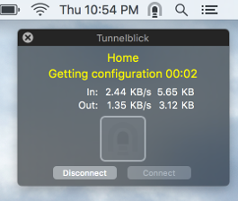

Tunnelblick Appearance
Icon
You may choose the icon that Tunnelblick displays in the menu bar and the animation associated with it:
• Standard icon: This icon is dim when there are no active connections and no connections are being attempted. When one or more connections are being attempted, the icon animates. When a connection is active (and no other connections are being attempted), the icon is bold.
• Tunnelblick 3.3 icon: (No Retina version.) This icon is dark when there are no active connections and no connections are being attempted. When one or more connections are being attempted, the icon animates by showing the tunnel getting darker and lighter repeatedly. When a connection is active (and no other connections are being attempted), the icon shows a yellow "light at the end of the tunnel".
• Monochrome icon: (No Retina version.) Identical to the Tunnelblick 3.3 icon except that when a connection is active (and no other connections are being attempted), the icon shows through the tunnel to the background of the menu bar.
You may also chose where the Tunnelblick icon is displayed in the menu bar:
• Place next to the Spotlight icon: The Tunnelblick icon in the menu bar may be displayed either next to the Spotlight icon, or to the left of the Apple icons. Its exact placement relative to other non-Apple icons depends on when the icons are loaded. Note: This option is disabled on certain versions of OS X when multiple displays are connected and the "Displays have separate Spaces" is enabled in the "Mission Control" System Preferences.
Menu
You may chose what information is presented in the menu that is displayed when you click on the Tunnelblick icon in the menu bar (or you invoke the menu by pressing the Tunnelblick keyboard shortcut).
• Display connection submenus: If checked, configurations that are in subfolders are shown as submenus. If not checked, configurations that are in subfolders are shown in the main menu, prefixed by the subfolders.
• Display connection timers: If checked, for each active connection the Tunnelblick menu will include the time that the connection has been active.
Startup Window
You may choose whether or not to show a window when Tunnelblick is starting up.
VPN Status Window
A drop-down list allows you to choose if and when to show VPN status windows (one per configuration, see below for an example), which can appear in the upper-right corner of the screen:
• Never show: The window will never be shown.
• Show while connecting: The window will be shown while a connection is being attempted, and for approximately one second after a connection is made or abandoned.
• Show when configuration status changes: The window will be shown when the configuration status changes, and for approximately one second after a connection is made or abandoned.
The difference between the last two choices is that "Show when configuration status changes" will show the window when a connection is disconnected, and "Show while connecting" will not show the window when a connection is disconnected
If there is more than on display attached to your computer, a drop-down list allows you to choose which display the VPN status windows will appear:
• Show on default screen 0 (width x height): The VPN status window will appear on the default display -- the largest display, currently the display with the indicated width and height.
• Show on screen 0 (width x height): The VPN status window will appear on display 0, the display with the indicated width and height.
• Show on screen 1 (width x height): The VPN status window will appear on display 1, the display with the indicated width and height.
• Show on screen 2 (width x height): The VPN status window will appear on display 2, the display with the indicated width and height.
(continuing for each available display.)
There are also two checkboxes:
• Show when the pointer is over the Tunnelblick icon: Displays VPN status windows for all "active" configurations whenever the pointer (cursor) is over the Tunnelblick icon in the menu bar. "Active" configurations are configurations that you have attempted to connect since Tunnelblick was launched. This checkbox is unavailable when "Never Show" is selected as described above.
• Show when disconnected: Does not display VPN status windows for configurations that are disconnected. This checkbox is unavailable when "Never Show" is selected as described above.

A VPN status window